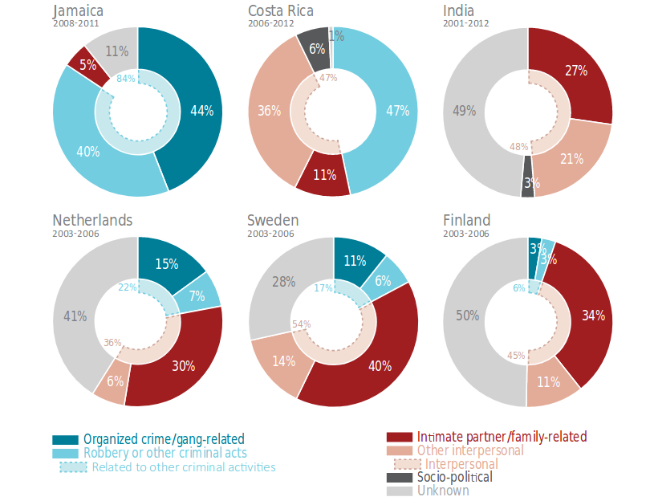

Ґендерно обумовлене насильство тема нова і актуальна для Україні. У виданні Update з’явилась неоднозначна інфографіка з кількістю жінок, що постраждали від насильства (і загинули від нього). Вони порівняли цю кількість з кількістю загиблих військових. Правда Update “забули” вказати де вони взяли дані та, що ці дані означають.
Після хвилі критики та заперечень, виявилось, що цифру у 600 Update взяли зі звіту Фонду Народонаселення ООН в Україні. Однак, представники фонду пояснюють, що підрахунок жінок, що загинули від ґендерно зумовленого насильства (в тому числі в сімʼї), просто ніхто не веде. Для того, щоб уявити масштаби проблеми, дослідники фонду обрахували максимально можливу кількість жертв (поряд з мінімальною яку подає МВС - 13 жінок). Вони помножили загальну кількість убитих жінок на “глобальних коефіцієнт”, він складає 47%
Що за “глобальний коефіцієнт”, звідки він взявся і наскільки йому можна довіряти?
Коефіцієнт - це відсоток жінок, що гинуть від рук свої партерів або родичів (для чоловіків він складає 6%). Він походить зі звіту Управління ООН з наркотиків та злочинності. Фактично це частка жінок, що загинули від рук своїх родичів та партнерів у світі за 2012 рік.Чи можна йому довіряти? Залежить від того яке завдання ви перед собою ставите. Він не допоможе отримати точне число загиблих, але завдяки ньому можна вирахувати максимально значення. Тобто скільки жінок могли загинути від рук родичів та партнерів за найгіршого сценарію.
Сам звіт також ООН пропонує дуже багато цікавої міжнародної статистики. Наприклад, на графіку зі звіту (ст. 41) . Помітно, що частка вбивств родичами та партнерами (червоний колір) серед усіх вбивств значно вища у розвинених країн. В країнах, що розвиваються, більшість вбивств вчиняють вуличні банди та грабіжники.

Що це ілюструє? Поліція у багатьох (але далеко не всіх) країнах навчилась ефективно боротися з бандитизмом і вуличною злочинністю. Однак, насильство в сім’ї залишається доволі стійкою проблемою і страждають від нього (згідно цього ж дослідження) найбільше жінки.
Раніше ми вже писали про вбивства та домашнє насильство в Україні. Ми помітили, що домашнє насильство значно частіше трапляється у селах, аніж містах. Однак, насильством різниця не обмежується. На графіках нижче ми показали по три найбільш поширених злочини сіл і міст.
Насильство в сім’ї у цьому випадку це стаття 172 Кодексу про адміністративні правопорушення. Ця стаття не включає усіх випадків насильства, вони можуть проходити за іншими статтями або не фіксуватися. Ти не менш, ми вважаємо, що відсоток людей який все ж звертається до поліції має бути схожим у різних регіонах. Відповідно в місцях де більше справ за статтею 172 - повинно бути більше випадків насильства.
Помітно, що в селах також часто наносять легкі тілесні ушкодження. За цією статтею часто також ховається сімейне насильство. В свою чергу у містах частіше трапляються грабежі (українська поліція ще не навчилась ефективно боротись з вуличною злочинністю) та п’яне водіння і зберігання наркотиків.
Шанси стати жертвою сімейного насильства зростають не лише якщо ви живете в селі. Є райони в яких суди стикають зі значно більшою кількістю справ по насильству ніж у решті країни. Ми показали їх на карті.
Ми порахували кількість судових рішень за усіма типами справ у кожному місцевому суді за 2016 рік. Потім ми класифікували суди на сільські та міські. За сільські вважалися суди у районах де більше 50% населення сільське і навпаки. Далі ми порахували скільки судових рішень припадає на 10 000 осіб у кожному районі для кожного виду злочину. Таким чином ми позбулися величезної різниці у населенні районів і отримали змогу їх порівнювати.
Врешті ми порахували середню кількість правопорушень для міських і сільських судів по кожному правопорушенню (злочини та деякі адміністративні правопорушення як “вчинення насильства в сім’ї”) і порівняли її. Ті типи справ, різниця між якими виявилась найбільшою ми показали на графіку.
(Примітка для спостережливих, медіану ми теж рахували і порівнювали. Однак вона вказала на ті самі злочини.)
Судовий реєстр показує, що дуже серйозні проблеми з домашнім насильством є у маленьких, сільських спільнот. В той же час, міські території найбільше потерпають від вуличної злочинності та нетверезого водіння.
Поліції потрібно врахувти ці ризики у своїй роботі і до певної міри вони це роблять. В стратегії МВС до 2020 року першим пріоритетом там вказано “безпечне середовище”. Заважає поліції виправити ситуацію, згідно з документом, складна криміногенна ситуація, обмежені ресурси, а також недостатня участь суспільства і місцевих спільнот в попередженні правопорушень.
У випадку сіл, все залежить від дільничних інспекторів і їх здатності порозумітися з мешканцями спільноти. Офіцери поліції, що активно спілкуються з жителями свого округу і багато часу проводять “в полі”, можуть ефективно зупиняти правопорушення. Про успішний досвід роботи поліції з громадськістю у Латвії можна ознайомитися у цьому звіті.
Профілактиці вуличних злочинів у містах може посприяти правильне планування території. Міжнародний досвід тут показує, що чим більш публічними, освітленими та доглянутими є вулиці, тим менш вони придатні для вчинення злочинів. Неможливо одночасно зробити вулиці українських міст такими, але важливо враховувати ці принципи у міському плануванні.
Наостанок ми підготували карти регіонів лідерів за деякими серйозними злочинами. Інформацію ми отримали і проаналізували ти же способом, що і для карти про домашнє насильство.